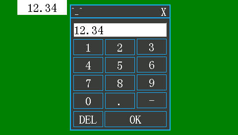
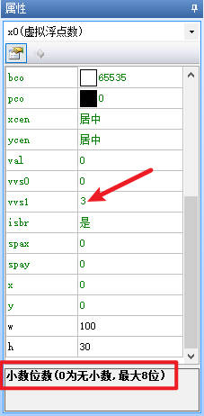
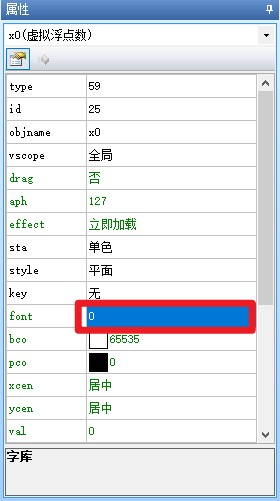

虚拟浮点数控件
用于在串口屏上显示浮点型（float）类型的数据，但是本质上仍然是整形（int），使用前需要提前导入字库，制作字库请参考 创建字库和导入字库
如何修改显示的字体大小：需要提前导入不同大小的字库，需要修改控件显示的字体大小时，通过上位机编辑或者通过指令修改控件的font属性即可，请参考 如何修改控件显示的字体
注意
虚拟浮点数控件是可以显示负数的，如果负号没有显示，请检查当前调用的字库是否有”-“(减号/负号)
虚拟浮点数控件-使用详解
给虚拟浮点数控件配置键盘

参考： 系统键盘的调用方式
虚拟浮点数控件赋值
//n1赋值为100，具体显示数值取决于控件的vvs0和vvs1属性
x1.val=100
//n2赋值为-999，具体显示数值取决于控件的vvs0和vvs1属性
x2.val=-999
//n0赋值为x1.val
x0.val=x1.val
//有虚拟浮点数的加法，所有参与计算的虚拟浮点数的vvs0和vvs1属性应一致
x0.val=x1.val+x2.val
//减法
x0.val=x1.val-x2.val
//乘法
x0.val=x1.val*x2.val
//取整
x0.val=x1.val/x2.val
//取余
x0.val=x1.val%x2.val
//跨页面赋值，前提是相关的变量vscope属性设置为全局
main.x0.val=set.x1.val+set.x2.val
注意
虚拟浮点数本质上还是整数,只是额外显示了一个小数点，但是这个小数点其实是假的，虚拟浮点数具体计算请参考 虚拟浮点数计算问题
虚拟浮点数控件赋值举例
例如显示114.514
新建一个虚拟浮点数控件，设置vvs1属性为3（设置小数位数为3）

//设置为114514，此时显示114.514
x0.val=114514
修改虚拟浮点数控件显示文字的大小和样式

我们需要提前导入不同大小的字库，需要修改虚拟浮点数控件显示大小时，通过上位机进行编辑或者通过指令进行修改即可，请参考 如何修改控件显示的字体
//将x0控件的字体设置为1号字体
x0.font=1
//将main页面的x0控件的字体设置为1号字体
main.x0.font=1
通过名称组的方式来设置x0控件的属性
sys0=x0.id
b[sys0].val=123
b[sys0].font=1
批量通过名称组的方式来设置虚拟浮点数控件的属性
假设x0存储的起始位置为100，x1存储位置104，x3存储位置108，以此类推，x9存储位置136
sys1=100
for(sys0=x0.id;sys0<=x9.id;sys0++)
{
repo b[sys0].val,sys1
sys1+=4
}
串口屏-如何显示小数
使用虚拟浮点数控件显示小数
1、在上位机工程新建一个虚拟浮点数控件，假设为x0，设置虚拟浮点数控件的小数点位数2位，将程序下载到串口屏上，
2、串口屏串口与单片机串口连接，两者波特率应一致，单片机RX接串口屏TX，单片机TX接串口屏RX。
3、发送指令：单片机串口通过字符串模式发送x0.val=314
4、发送结束符：单片机通过HEX模式发送0xff 0xff 0xff
5、此时屏幕上的x0控件内的文字变为“3.14”
使用文本控件显示小数
1、在上位机工程新建一个文本控件，假设为t0，将程序下载到串口屏上，
2、串口屏串口与单片机串口连接，两者波特率应一致，单片机RX接串口屏TX，单片机TX接串口屏RX。
3、发送指令：单片机串口通过字符串模式发送t0.txt=”3.14”
4、发送结束符：单片机通过HEX模式发送0xff 0xff 0xff
5、此时屏幕上的t0控件内的文字变为“3.14”
浮点数控件-c语言示例
单片机通过串口给虚拟浮点数控件赋值
printf("x0.val=123\xff\xff\xff");
printf("x0.val=%d\xff\xff\xff",a);
注意
给虚拟浮点数控件赋值必须是整形（int），否则会出错,虚拟浮点数本质上还是整数
虚拟浮点数计算问题
假如有浮点数x0，x1，x2
x0.val=1234，小数位数2位，屏幕上显示12.34
x1.val=34567,小数位数3位，屏幕上显示34.567
虚拟浮点数加法
先将所有浮点数的小数位数设置为相等
x0.val=x0.val*10
x0.vvs1=x0.vvs1+1
此时x0.val=12340，小数位数3位，屏幕上显示12.340，此时就可以直接相加
x2.val=x0.val+x1.val
x2.vvs1=x0.vvs1 //或者x2.vvs1=x1.vvs1
虚拟浮点数减法
与加法一样，需要将所有浮点数的小数位数设置为相等
x2.val=x0.val-x1.val
//或者x2.vvs1=x1.vvs1
x2.vvs1=x0.vvs1
虚拟浮点数乘法
x2.val=x0.val*x1.val
x2.vvs1=x0.vvs1+x1.vvs1
如果最后的结果发现小数点里的0太多，建议把x2.val除以10的倍数，同时x2.vss1减小相应的值
x2.val=x2.val/100
x2.vvs1=x2.vvs1-2
虚拟浮点数除法
x2.val=x0.val/x1.val
x2.vvs1=x0.vvs0-x1.vvs1
鉴于精度的问题，建议将被除数多扩大几倍以提高精度
浮点数发送给单片机
x0.val=-1234，小数位数2位，屏幕上显示-12.34
屏幕：
prints x0.val,0
此时屏幕发出的是-1234，单片机将这个值保存到float类型变量x中，此时单片机中的x=-1234
屏幕：
prints x0.vvs1，0
此时屏幕发送x0的小数位数，也就是2，单片机将这个值保存到u8类型变量j中，此时单片机中的j=2 单片机：
uint32_t j2=1;
for(i=0;i<j;i++)
{
j2=j2*10;
}
//得到真正的浮点数x
x=x/j2;
//初始化j2，避免后续出问题
j2=1;
虚拟浮点数控件-样例工程下载
演示工程下载链接：
虚拟浮点数控件-相关链接
哪些控件属性可以运行中修改，哪些不能运行中修改，绿色属性和黑色属性有什么区别？
虚拟浮点数控件-属性详解
提示
绿色属性可以通过上位机或者串口屏指令进行修改，黑色属性只能在上位机中修改或者不可修改，可通过上位机进行修改指“选中控件后通过属性栏修改控件的属性”
type属性 -控件类型，固定值，不同类型的控件type值不同，相同类型的控件type值相同，可读，不可通过上位机修改，不可通过指令修改。参考： 控件属性-控件id对照表
id属性 -控件ID，可通过上位机左上角的上下箭头置顶或置底，可读，可通过上位机修改左上角的箭头置顶或置地间接修改，不可通过指令修改。参考： 如何更改控件的前后图层关系
objname属性 -控件名称。不可读，可通过上位机进行修改，不可通过指令更改。
vscope属性 -内存占用(私有占用只能在当前页面被访问，全局占用可以在所有页面被访问)，当设置为私有时，跳转页面后，该控件占用的内存会被释放，重新返回该页面后该控件会恢复到最初的设置。可读，可通过上位机进行修改，不可通过指令更改。参考：跨页面赋值，全局变量操作
drag属性 -是否支持拖动:0-否;1-是。仅x系列支持。可读，可通过上位机修改，可通过指令修改。
aph属性 -不透明度(0-127)，0为完全透明，127为完全不透明。仅x系列支持。可读，可通过上位机修改，可通过指令修改。
effect属性 -加载特效:0-立即加载;1-上边飞入;2-下边飞入;3-左边飞入;4-右边飞入;5-左上角飞入;6-右上角飞入;7-左下角飞入;8-右下角飞入。仅x系列支持，在上位机中设置为立即加载时，无法通过指令变为其他特效，当在上位机中设置为非立即加载的特效时，可以变为立即加载，也可以再改为其他特效
sta属性 -背景填充方式:0-切图;1-单色;2-图片;3-透明（仅x系列支持透明）。可读，可通过上位机修改，不可通过指令修改。
picc属性 -切图背景(必须是全屏图片)，sta为切图时才有这个属性。可读，可通过上位机修改，可通过指令修改。
bco属性 -背景色，sta为单色时才有这个属性。可读，可通过上位机修改，可通过指令修改。
style属性 -显示风格:0-平面;1-边框;2-3D_Down;3-3D_Up;4-3D_Auto，sta为单色时才有这个属性。可读，可通过上位机修改，不可通过指令修改。
borderc属性 -边框颜色。当style设置为边框时可用。可读，可通过上位机修改，x系列可通过指令修改，其他系列不可通过指令修改。
borderw属性 边框粗细。当style设置为边框时可用。最大值:255。可读，可通过上位机修改，x系列可通过指令修改，其他系列不可通过指令修改。
pic属性 -背景图片，sta为图片时才有这个属性。可读，可通过上位机修改，可通过指令修改。
pco属性 -字体色。可读，可通过上位机修改，可通过指令修改。
key属性 -绑定键盘。可读，可通过上位机修改，不可通过指令修改。
font属性 -控件调用的字库id，调用不同的字库会显示不同的字体或字号。可读，可通过上位机修改，可通过指令修改。参考：1、 创建字库和导入字库 2、 指定字库
xcen属性 -水平对齐:0-靠左;1-居中;2-靠右。可读，可通过上位机修改，可通过指令修改。
ycen属性 -垂直对齐:0-靠上;1-居中;2-靠下。可读，可通过上位机修改，可通过指令修改。
val属性 -初始值(最小-2147483648,最大2147483647)。可读，可通过上位机修改，可通过指令修改。
vvs0属性 -整数位数(0为自动,最大10位)。可读，可通过上位机修改，可通过指令修改。
vvs1属性 -小数位数(0为无小数,最大8位)。可读，可通过上位机修改，可通过指令修改。
isbr属性 -是否自动换行:0-否;1-是。可读，可通过上位机修改，可通过指令修改。
spax属性 -字符横向间距(最小0,最大255)。可读，可通过上位机修改，x系列可通过指令修改，其他系列不可通过指令修改。
spay属性 -字符纵向间距(最小0,最大255)。可读，可通过上位机修改，x系列可通过指令修改，其他系列不可通过指令修改。
x属性 -控件的X坐标。可读，可通过上位机修改，x系列可通过指令修改，其他系列不可通过指令修改。
y属性 -控件的Y坐标。可读，可通过上位机修改，x系列可通过指令修改，其他系列不可通过指令修改。
w属性 -控件的宽度。可读，可通过上位机修改，不可通过指令修改。
h属性 -控件的高度。可读，可通过上位机修改，不可通过指令修改。